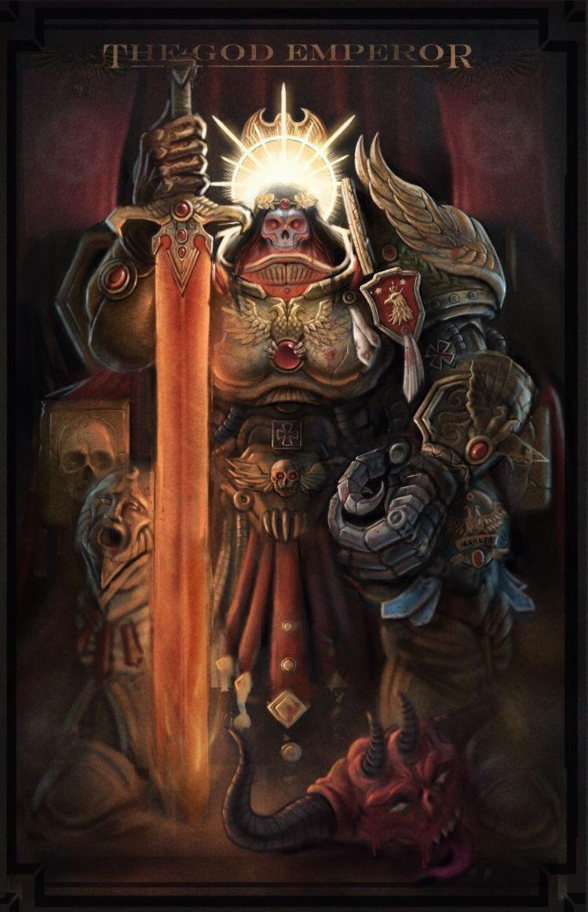
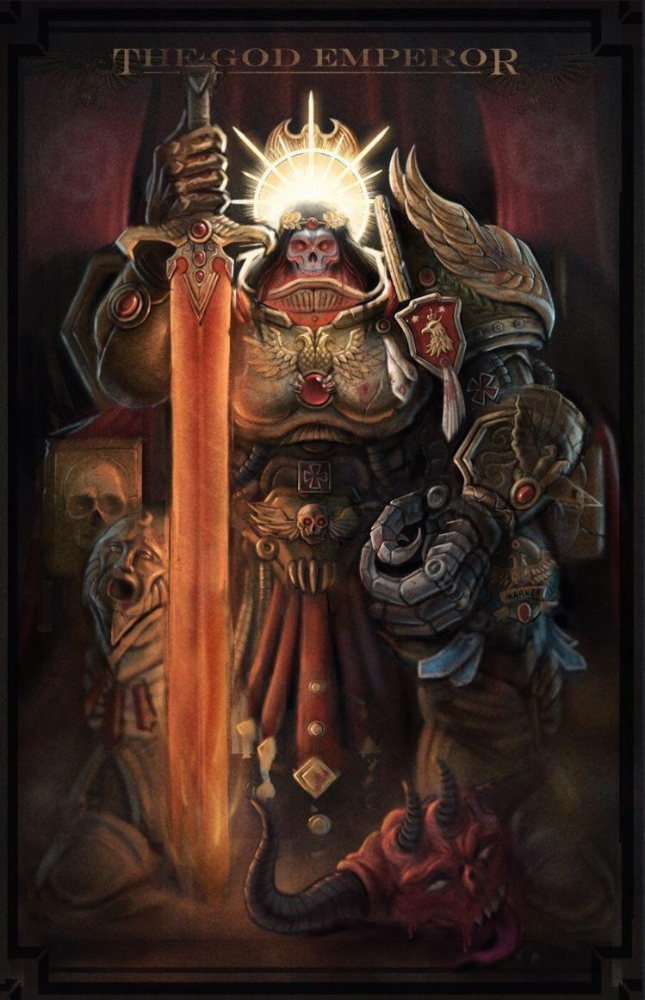

The Emperor of Mankind, often referred to by His faithful as the "God-Emperor," the "Master of Mankind," or simply "the Emperor," and who sometimes referred to Himself as "Revelation," known to the forces of Chaos as the False Emperor or the Corpse Emperor, is the immortal Perpetual and psyker who serves as the reigning monarch of the Imperium of Man, and is described by the Imperial Ecclesiarchy and the Imperial Cult as the father, guardian and god of Humanity.
He has sat immobile, His body slowly crumbling, within the Golden Throne of Terra for over 10,000 standard years. Although once a living man, His shattered, decaying body can no longer support life, and it is kept intact only by the cybernetic mechanisms of the Golden Throne and a potent mind itself sustained by the daily sacrifice of thousands of lives.
The Emperor chose to sacrifice His immortal life at the end of the Horus Heresy in the service and protection of Mankind. To Humanity's countless trillions across the galaxy-spanning Imperium, He is nothing less than God. Through His Imperium, Humanity is united and remains one of the most powerful intelligent species in the Milky Way galaxy as well as its most dominant in terms of both population and territory held.
Though He is no longer responsive to external stimuli, the Emperor still lies at the very heart of the Imperium's continued existence. Although He cannot be directly involved in the day-to-day running of Humanity's galactic government, His existence on the Golden Throne is vital to sustaining the Imperium, since His powerful mind's presence in the Immaterium maintains and directs the Astronomican, the psychic beacon that makes possible faster-than-light Warp travel and is vital to Imperial shipping, transportation, commerce and communication.
He is said to still guide His race through the psychically-reactive divination tool known as the Emperor's Tarot, which select psykers can consult to gain a glimpse of the future and the Emperor's will. He is also said to constantly battle the Chaos Gods in the Warp and prevent their further intrusion upon the material universe.
His mind must remain vigilant at all times throughout the entire Imperium to safeguard the Human race and to offer His protection to the faithful. Above all else, it is Mankind's collective belief in the Emperor's divinity that serves as its greatest protection from Chaos and the other hideous dangers that plague the galaxy. As the Imperial Creed has taught for over 10,000 standard years, the Emperor protects...
 
